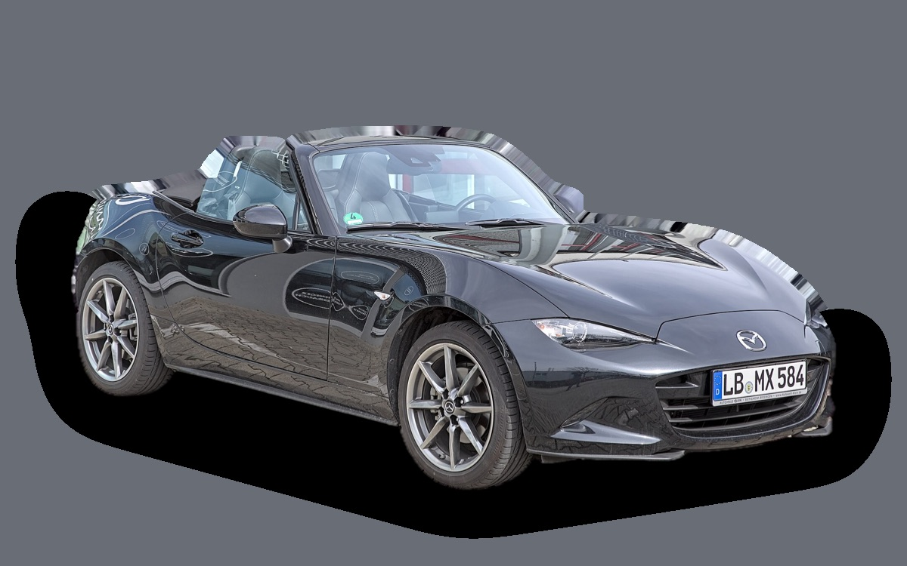

Vad kostar en Mazda MX-5 per månad?
En Mazda MX-5 från 2023 kostar cirka 3 274 kr i månaden, allt inräknat.
3 274 krper månad, årsmodell 2023
268 000 krpris, årsmodell 2023
367 000 krnypris från
Cprisvärdhetsbetyg (2023)

_1X7A2479.jpg){kind=link}
Månadskostnad per årsmodell
| Årsmodell | Version i beräkningen | Pris | Per månad | Betyg |
|---|---|---|---|---|
| 2026 | 1.5 Skyactiv-G 132, Exclusive-Line | 367 000 kr | 4 742 kr | D |
| 2023 | 1.5 Skyactiv-G 132, Exclusive-Line | 268 000 kr | 3 274 kr | C |
| 2020 | 1.5 Skyactiv-G 132, Exclusive-Line | 236 000 kr | 3 190 kr | C |
Räknat på 5 års ägande och 1 250 mil per år, med bränslepriser från 2026-10-22. Månadskostnaden innehåller värdeminskning, drivmedel, service och reparationer, försäkring och fordonsskatt.
Så fördelas kostnaden för en 2023:a
- Värdeminskning: 977 kr/mån
- Drivmedel: 1 336 kr/mån
- Service och reparationer: 409 kr/mån
- Försäkring: 461 kr/mån
- Fordonsskatt: 90 kr/mån
Begagnatpriser i annonser
| Årsmodell | Medianpris | Annonser | Typiskt miltal |
|---|---|---|---|
| 2025 | 329 500 kr | 5 | – |
| 2024 | 322 400 kr | 12 | 1 400 mil |
| 2023 | 279 700 kr | 5 | 1 900 mil |
| 2020 | 199 000 kr | 3 | 2 300 mil |
| 2019 | 290 500 kr | 8 | 2 300 mil |
| 2018 | 269 800 kr | 3 | 2 900 mil |
| 2017 | 245 700 kr | 8 | 3 900 mil |
| 2016 | 209 800 kr | 3 | 6 200 mil |
Medianpriset i svenska annonser per årsmodell i oktober 2026 (källa: AutoUncle, BilKoll). Annonspriser är utgångspriser, och slutpriset kan bli lägre.
Motorer och versioner
| Motor | Drivmedel | Effekt | 0–100 km/h | Förbrukning (WLTP) | Räckvidd | Årsmodeller | Pristillägg |
|---|---|---|---|---|---|---|---|
| 1.5 Skyactiv-G 132 | Bensin | 132 hk | 8,3 s | 6,2 l/100 km | – | från 2015 | – |
| 2.0 Skyactiv-G 184 | Bensin | 184 hk | 6,5 s | 6,9 l/100 km | – | 2018–2024 | +28 000 kr |
- Utrustning: Exclusive-Line, Homura RF (+60 600 kr)
Fakta
- Kaross
- Sportbil
- Årsmodeller
- sedan 2015
- Nypris från
- 367 000 kr
- Bagage
- 130 liter
- Euro NCAP
- 4 av 5 stjärnor
- Nybilsgaranti
- 3 år
- Driftsäkerhet
- 5 av 5
- Helförsäkring, uppskattning
- 6 200 kr/år
- Service, uppskattning
- 3 200 kr/år
Fördelar och nackdelar
Fördel
Lätt, rolig och mycket driftsäker roadster som håller värdet.
Nackdel
Bara två säten och mycket litet bagage.
Liknande bilar
 Audi TT4 392 kr/mån som 2020:a
Audi TT4 392 kr/mån som 2020:a BMW Z45 120 kr/mån som 2023:a
BMW Z45 120 kr/mån som 2023:a BMW M28 645 kr/mån som 2023:a
BMW M28 645 kr/mån som 2023:a Ford Mustang11 421 kr/mån som 2026:a
Ford Mustang11 421 kr/mån som 2026:a Porsche 91111 903 kr/mån som 2023:a
Porsche 91111 903 kr/mån som 2023:a
Uppdaterad 2026-10-27 · annonsdata okt 2026